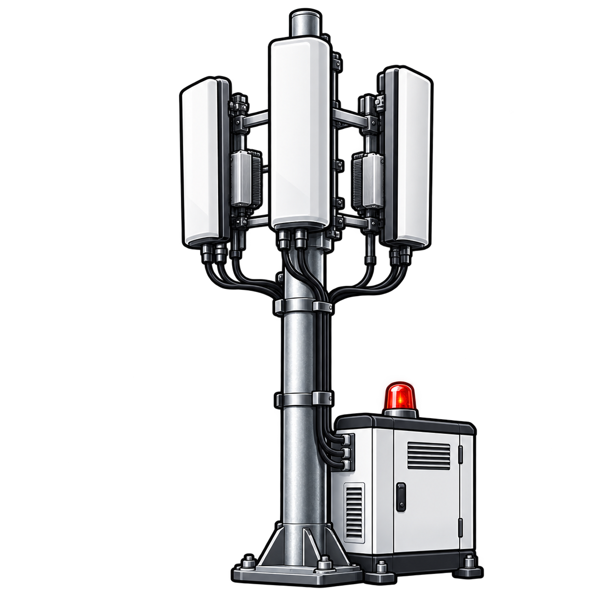
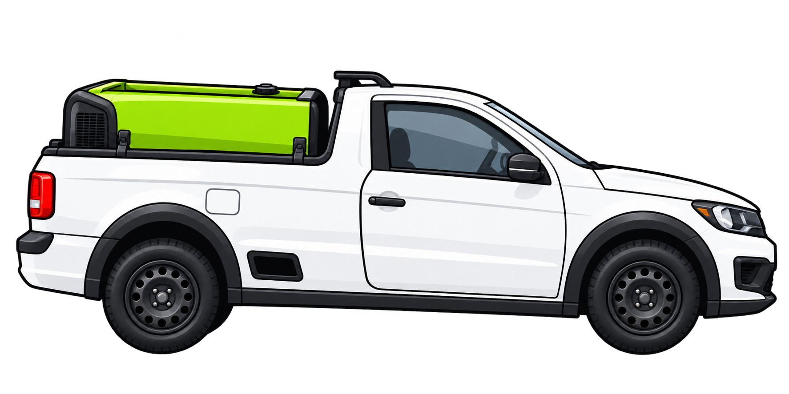

RELATÓRIO OPERACIONAL
Entre com seu e-mail e senha para consultar e editar os atendimentos.
Carregando atendimentos…
Conectando ao Supabase…


Carregando referências…
Compare os valores antes de continuar. Nada será sobrescrito sem sua escolha.
Se a linha foi removida ou alterada antes da exclusão, carregue a versão da nuvem e revise a ação.